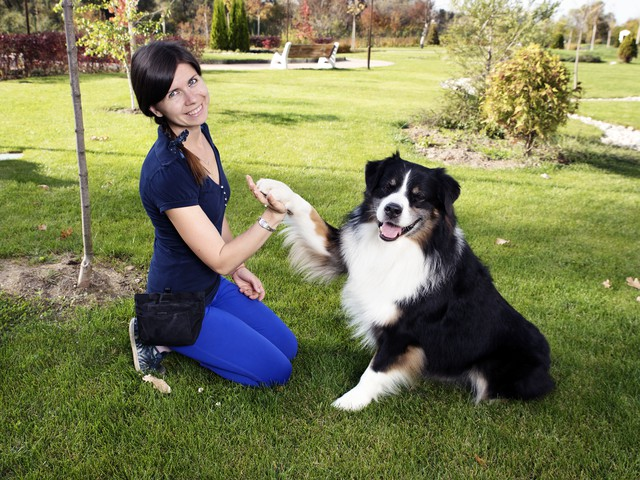

Meet Our Professional Trainers

John Doe

Jane Smith

Maxine Johnson

Mark Willson

Sara Smith
Pet training is essential for fostering a harmonious relationship between pets and their owners. It ensures that pets understand and obey commands, which can significantly enhance their safety and well-being. Proper training helps prevent behavioral issues such as excessive barking, chewing, and aggression, making pets more pleasant companions. Additionally, training provides mental stimulation, which is crucial for preventing boredom and related destructive behaviors. It also strengthens the bond between pets and their owners, as the training process involves positive reinforcement and mutual trust. Ultimately, well-trained pets are happier, healthier, and more integrated into family life, contributing to a more peaceful and enjoyable household.
Training also plays a crucial role in socializing pets, teaching them how to interact appropriately with other animals and people. This is particularly important in preventing fear-based aggression and ensuring that pets are confident and comfortable in various environments. Consistent training can improve a pet's adaptability, making it easier to travel, visit the vet, or welcome guests into the home. Moreover, training enhances communication between pets and their owners, enabling clearer and more effective interactions. By investing time in training, owners can address and correct undesirable behaviors early, leading to a more balanced and well-adjusted pet. Overall, training is a foundational aspect of responsible pet ownership, contributing to the overall quality of life for both pets and their families.
Our 'Get a Pet' will help to get these all training skills for your fur-ever friend.
Here are some common types of pet training:
John Doe
Jane Smith
Maxine Johnson
Mark Willson
Sara Smith